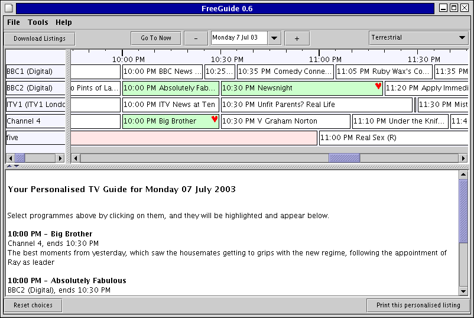
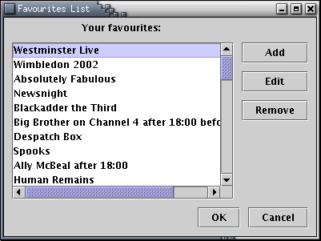
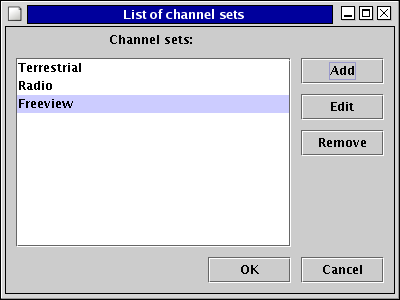
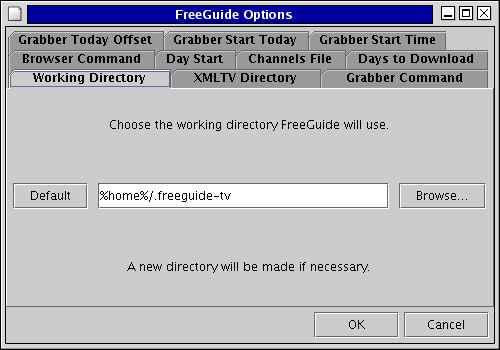
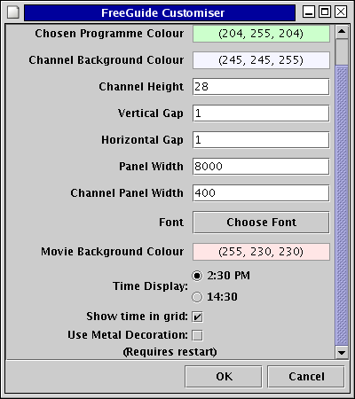

FreeGuide is a TV listings viewer that works offline. It downloads listings information from the Internet and stores it for later viewing. The viewer allows the user to view television listings and create customised TV guides by selecting programmes and by building up a favourites list.
Developers info:
Screen shots:




